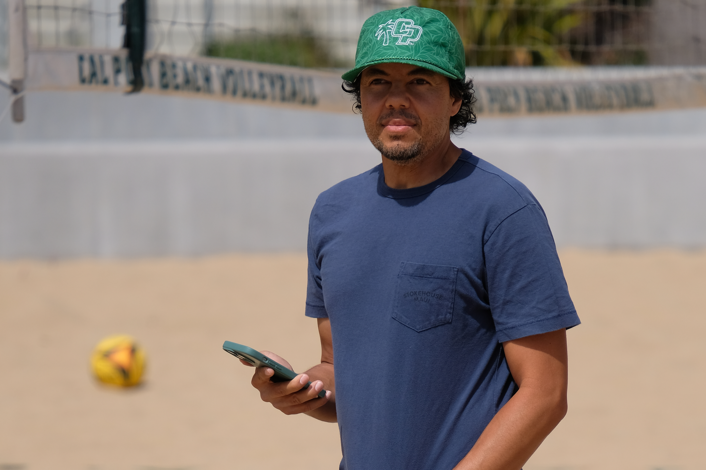
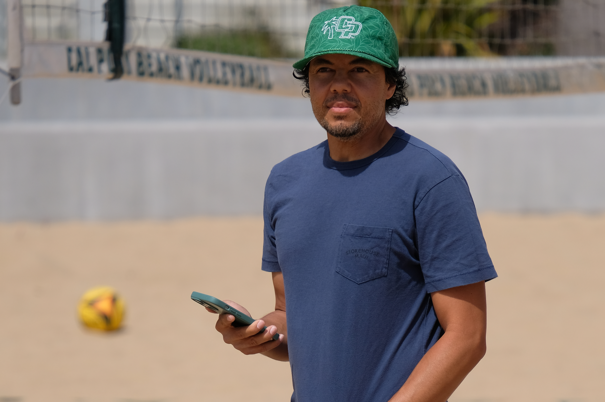

The 100-level kinesiology classes at Cal Poly offer a unique opportunity for students to engage in college-level physical education classes that are not only fun but also contribute to their overall well-being. These classes cover a wide range of activities, including bowling, basketball, golf, yoga, pilates, pickleball, karate, flag football, swimming, tennis, and more. While these classes may seem like leisure activities, they are designed to provide students with a deeper understanding of the specific sport or physical activity. Students learn the fundamental techniques, rules, and strategies associated with each activity, allowing them to develop skills and improve their performance.
Beyond the physical aspect, these classes also emphasize the importance of maintaining a healthy and active lifestyle. Students learn about the benefits of regular exercise, proper nutrition, injury prevention, and the psychological aspects of physical activity. They gain knowledge that can be applied to their personal lives, promoting lifelong habits of physical fitness and well-being.
Sun and Fun
Nothing epitomizes Cal Poly more than KINE 152, a beach volleyball class at the Swanson Beach Volleyball Complex where students can learn and play the game for two hours a week while also earning course credit. The instructor for the class is adjunct faculty member Kenneth Brandstetter, a lifelong volleyball player and coach.
![Brandstetter used to work for the Behavioral Health department of the City of San Luis Obispo, but after getting cancer he decided to walk away from his job and come teach beach volleyball at Cal Poly. | April 25, 2023
“I love [teaching volleyball], I absolutely love it,” Brandstetter said.](img/1.jpg) 



![“I was able to meet three of my really good friends through this class,” industrial engineering senior Justice Radler said. “We started a group chat and started playing outside of this class and hanging out too. Then, we started an [intramural] team and now we get to play every Tuesday and show ‘em what we learned through this class.” | April 25, 2023](img/6.jpg)


 />
/>
 />
/>